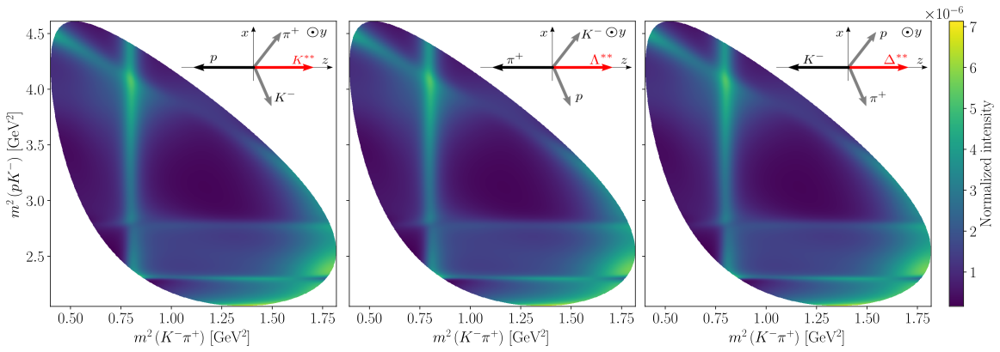

7.4. Alignment consistency#
model_choice = 0
model_file = "../../data/model-definitions.yaml"
particles = load_particles("../../data/particle-definitions.yaml")
amplitude_builder = load_model_builder(model_file, particles, model_choice)
imported_parameter_values = load_model_parameters(
model_file, amplitude_builder.decay, model_choice, particles
)
models = {}
for reference_subsystem in (1, 2, 3):
models[reference_subsystem] = amplitude_builder.formulate(
reference_subsystem, cleanup_summations=True
)
models[reference_subsystem] = attrs.evolve(
models[reference_subsystem],
parameter_defaults={
**models[reference_subsystem].parameter_defaults,
**imported_parameter_values,
},
)
models[2] = flip_production_coupling_signs(models[2], subsystem_names=["K", "L"])
models[3] = flip_production_coupling_signs(models[3], subsystem_names=["K", "D"])
\[\begin{split}\displaystyle \begin{array}{c}
\sum_{\lambda_{0}=-1/2}^{1/2} \sum_{\lambda_{1}=-1/2}^{1/2}{\left|{\sum_{\lambda_0^{\prime}=-1/2}^{1/2} \sum_{\lambda_1^{\prime}=-1/2}^{1/2}{A^{1}_{\lambda_0^{\prime}, \lambda_1^{\prime}, 0, 0} d^{\frac{1}{2}}_{\lambda_1^{\prime},\lambda_{1}}\left(\zeta^1_{1(1)}\right) d^{\frac{1}{2}}_{\lambda_{0},\lambda_0^{\prime}}\left(\zeta^0_{1(1)}\right) + A^{2}_{\lambda_0^{\prime}, \lambda_1^{\prime}, 0, 0} d^{\frac{1}{2}}_{\lambda_1^{\prime},\lambda_{1}}\left(\zeta^1_{2(1)}\right) d^{\frac{1}{2}}_{\lambda_{0},\lambda_0^{\prime}}\left(\zeta^0_{2(1)}\right) + A^{3}_{\lambda_0^{\prime}, \lambda_1^{\prime}, 0, 0} d^{\frac{1}{2}}_{\lambda_1^{\prime},\lambda_{1}}\left(\zeta^1_{3(1)}\right) d^{\frac{1}{2}}_{\lambda_{0},\lambda_0^{\prime}}\left(\zeta^0_{3(1)}\right)}}\right|^{2}} \\
\sum_{\lambda_{0}=-1/2}^{1/2} \sum_{\lambda_{1}=-1/2}^{1/2}{\left|{\sum_{\lambda_0^{\prime}=-1/2}^{1/2} \sum_{\lambda_1^{\prime}=-1/2}^{1/2}{A^{1}_{\lambda_0^{\prime}, \lambda_1^{\prime}, 0, 0} d^{\frac{1}{2}}_{\lambda_1^{\prime},\lambda_{1}}\left(\zeta^1_{1(2)}\right) d^{\frac{1}{2}}_{\lambda_{0},\lambda_0^{\prime}}\left(\zeta^0_{1(2)}\right) + A^{2}_{\lambda_0^{\prime}, \lambda_1^{\prime}, 0, 0} d^{\frac{1}{2}}_{\lambda_1^{\prime},\lambda_{1}}\left(\zeta^1_{2(2)}\right) d^{\frac{1}{2}}_{\lambda_{0},\lambda_0^{\prime}}\left(\zeta^0_{2(2)}\right) + A^{3}_{\lambda_0^{\prime}, \lambda_1^{\prime}, 0, 0} d^{\frac{1}{2}}_{\lambda_1^{\prime},\lambda_{1}}\left(\zeta^1_{3(2)}\right) d^{\frac{1}{2}}_{\lambda_{0},\lambda_0^{\prime}}\left(\zeta^0_{3(2)}\right)}}\right|^{2}} \\
\sum_{\lambda_{0}=-1/2}^{1/2} \sum_{\lambda_{1}=-1/2}^{1/2}{\left|{\sum_{\lambda_0^{\prime}=-1/2}^{1/2} \sum_{\lambda_1^{\prime}=-1/2}^{1/2}{A^{1}_{\lambda_0^{\prime}, \lambda_1^{\prime}, 0, 0} d^{\frac{1}{2}}_{\lambda_1^{\prime},\lambda_{1}}\left(\zeta^1_{1(3)}\right) d^{\frac{1}{2}}_{\lambda_{0},\lambda_0^{\prime}}\left(\zeta^0_{1(3)}\right) + A^{2}_{\lambda_0^{\prime}, \lambda_1^{\prime}, 0, 0} d^{\frac{1}{2}}_{\lambda_1^{\prime},\lambda_{1}}\left(\zeta^1_{2(3)}\right) d^{\frac{1}{2}}_{\lambda_{0},\lambda_0^{\prime}}\left(\zeta^0_{2(3)}\right) + A^{3}_{\lambda_0^{\prime}, \lambda_1^{\prime}, 0, 0} d^{\frac{1}{2}}_{\lambda_1^{\prime},\lambda_{1}}\left(\zeta^1_{3(3)}\right) d^{\frac{1}{2}}_{\lambda_{0},\lambda_0^{\prime}}\left(\zeta^0_{3(3)}\right)}}\right|^{2}} \\
\end{array}\end{split}\]
See DPD angles for the definition of each \(\zeta^i_{j(k)}\).
Note that a change in reference sub-system requires the production couplings for certain sub-systems to flip sign:
Sub-system 2 as reference system: flip signs of \(\mathcal{H}^\mathrm{production}_{K^{**}}\) and \(\mathcal{H}^\mathrm{production}_{L^{**}}\)
Sub-system 3 as reference system: flip signs of \(\mathcal{H}^\mathrm{production}_{K^{**}}\) and \(\mathcal{H}^\mathrm{production}_{D^{**}}\)
unfolded_intensity_exprs = {
reference_subsystem: cached.unfold(model)
for reference_subsystem, model in tqdm(models.items(), disable=NO_LOG)
}
subs_intensity_exprs = {
reference_subsystem: cached.xreplace(
expr, models[reference_subsystem].parameter_defaults
)
for reference_subsystem, expr in unfolded_intensity_exprs.items()
}
intensity_funcs = {
reference_subsystem: cached.lambdify(expr)
for reference_subsystem, expr in tqdm(subs_intensity_exprs.items(), disable=NO_LOG)
}
transformer = {}
for reference_subsystem in tqdm([1, 2, 3], disable=NO_LOG):
model = models[reference_subsystem]
transformer.update(create_data_transformer(model).functions)
transformer = SympyDataTransformer(transformer)
grid_sample = generate_meshgrid_sample(model.decay, resolution=1000)
grid_sample = transformer(grid_sample)
intensity_grids = {i: func(grid_sample) for i, func in intensity_funcs.items()}
{1: Array(2.45658113e+09, dtype=float64),
2: Array(2.45658113e+09, dtype=float64),
3: Array(2.45658113e+09, dtype=float64)}
assert_almost_equal(jnp.nansum(intensity_grids[2] - intensity_grids[1]), 0, decimal=5)
assert_almost_equal(jnp.nansum(intensity_grids[2] - intensity_grids[1]), 0, decimal=5)
